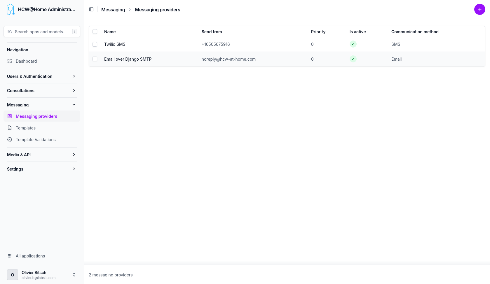
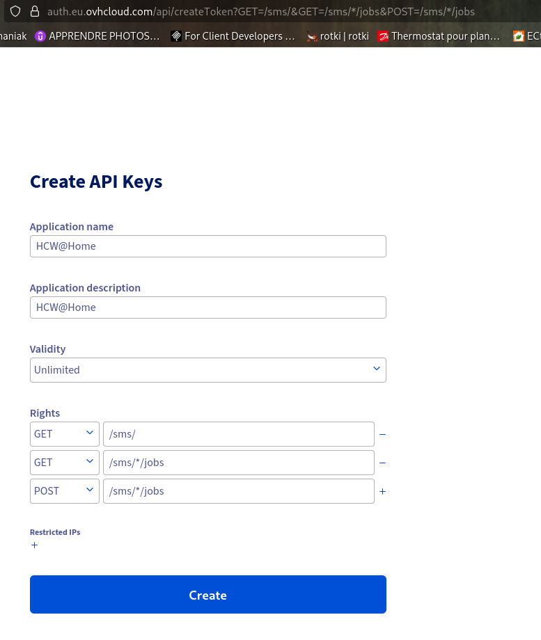
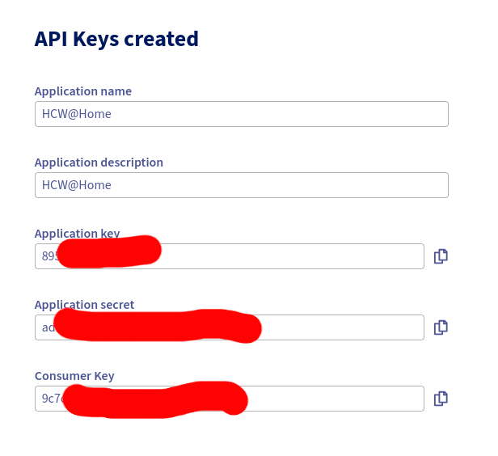

Messaging Providers
Messaging providers are used to send notifications, invitations, and reminders to patients and practitioners.
Menu: Messaging > Messaging providers

An SMTP provider can be configured to send emails (invitations, appointment reminders, password reset, etc.).
SMS
An SMS gateway can be configured to send SMS notifications to patients who do not have an email address or for urgent reminders.
OVH SMS
To send SMS through OVH, you first need an OVH SMS account, then an API token (application key, application secret and consumer key) authorized for the SMS endpoints.
1. Create the API token
Open the following URL while logged in to your OVH account. It pre-fills the exact access rules the integration needs:
Access rules must match exactly
OVH matches token access rules on the exact path. The integration calls GET /sms (list services) and POST /sms/{service}/jobs/ (send), so the token must be granted GET /sms/, GET /sms/*/jobs and POST /sms/*/jobs. A token granted only GET /sms (or with a different path) returns 403 NOT_GRANTED_CALL.
On the token creation page:
- The Application name and Application description are free text — they only help you identify what the key is used for.
- Set Validity to Unlimited, otherwise the token will stop working after the expiry date.

Copy the credentials immediately
After validation, OVH shows the Application Key, Application Secret and Consumer Key only once. Copy all three before leaving the page — they cannot be displayed again afterwards.

2. Fill in the provider in HUG@Home
Menu: Messaging > Messaging providers > add/edit the OVH provider
| Field | Value |
|---|---|
| Application key | The Application Key from OVH |
| Application secret | The Application Secret from OVH |
| Consumer key | The Consumer Key from OVH |
| Service name | The SMS service name as shown in OVH (e.g. sms-xxxxxxx-1) |
| Sender ID | The registered sender name (see below), or leave empty |
Sender ID
The Sender ID is the name displayed to the SMS recipient. It must be a sender registered and validated in your OVH account beforehand — OVH validates senders manually, which can take a few hours.
If you leave the field empty, OVH will send from a short number instead of a named sender.
3. Test
Use the Test connection action on the provider to verify the credentials and that the configured service name exists in your OVH account.
WhatsApp messages are sent through Twilio. Unlike SMS or email, WhatsApp only accepts pre-approved message templates outside of a 24-hour conversation window opened by the recipient. Each notification therefore has to be submitted to Meta for approval, per language, before it can be delivered.
At send time the platform looks for an approved template matching the notification, the provider and the recipient's language, falling back to the base language then to the site default. If it finds none — or if the template has been edited since approval — the message is not sent over WhatsApp and the platform falls back to the SMS providers, using the same phone number. Nothing is lost, and no API call is wasted on a delivery that Meta would refuse.
1. Set the backend base URL
Menu: Settings > Constance > URLs > Backend base URL
This must be the publicly reachable URL of this backend. It is used for two things:
- the static base of the WhatsApp button URLs (
https://<backend>/r/<token>), which redirect the recipient to the patient or practitioner application; - the delivery status webhook Twilio calls back.
Set it before submitting templates
The URL is baked into every approved template. Changing it later flags all validations as Content changed, and they must be submitted again. The same applies to the site name, which signs every template.
2. Create the provider
Menu: Messaging > Messaging providers > add a provider
| Field | Value |
|---|---|
| Name | Twilio WhatsApp |
| Account SID | The Twilio Account SID |
| Auth token | The Twilio Auth Token |
| From phone | The WhatsApp-enabled Twilio number, e.g. +14155238886 |
Use the Test connection action to verify the credentials. As for SMS, Included prefixes and Excluded prefixes restrict the provider to certain country codes, and Priority orders it against the other WhatsApp providers.
3. Submit the templates for approval
Menu: Messaging > Template validations
- Generate WhatsApp validations creates one entry per notification, language and WhatsApp provider.
- Select the entries and run Submit templates for validation. This creates the Twilio Content
template and sends it to WhatsApp for approval. The Variable expressions field then shows which
template expression each
{{1}},{{2}}… placeholder stands for. - Check pending validations refreshes every template still awaiting approval, without selecting anything. Approval by Meta usually takes a few minutes but can take up to 24 hours, so expect to run it more than once. Check validation status does the same on a hand-picked selection.
Only templates in the Validated state are used for sending.
| Status | Meaning |
|---|---|
| Created | Generated locally, not submitted yet. |
| Pending | Submitted, waiting for Meta's decision. |
| Validated | Approved and in use. |
| Outdated | The template text, the backend URL or the site name changed since approval. Submit again. |
| Rejected | Refused by Meta. The reason is shown in its own column and kept in the logs. |
| Failed | Never reached Meta: local pre-check, missing credentials or Twilio error. See the logs. |
Templates rejected by Meta
Meta refuses a body that starts with a variable or puts two variables side by side. Templates are checked against these rules before submission: a non-compliant template is marked Failed immediately, with the reason and the offending body in its logs, instead of coming back rejected hours later. Adjust the wording under Messaging > Template overrides and submit again.
Two things are handled automatically and need no rewording:
- every body is signed with the site name, so all WhatsApp messages close the same way. This also satisfies Meta, which refuses a body ending on a variable;
- two variables separated only by a space are merged into a single one (
{{1}}carrying both the first and last name, for instance).
Jinja conditions are also supported: a whole {% if %}...{% endif %} block becomes one
variable, resolved when the message is sent.
A rejection reason is only reported once
Meta drops the reason as soon as a template is resubmitted, and each status check overwrites the stored provider response. The reason is therefore also written to the validation logs when the rejection is first seen — that copy is the one that survives.
Whenever a template's text is edited, its validations are flagged Outdated and are no longer used for sending until they have been submitted and approved again.
4. Delivery status
Twilio reports delivery progress to https://<backend>/messaging/twilio/status/<token>, which the
platform passes with every message. The Delivered at and Read at fields of
Messaging > Messages are filled from these callbacks. The endpoint requires a valid
X-Twilio-Signature, so the backend must be reachable from the internet for statuses to progress
beyond Sent.
5. Inviting a contact over WhatsApp
Once an active WhatsApp provider exists, typing a phone number in the practitioner's contact picker offers two invitations, by SMS and on WhatsApp, instead of one. The practitioner picks the channel, which sets the contact's communication method; it can still be changed afterwards under Contact details. With a single phone provider configured, a single invitation is offered and it names the channel actually in use.